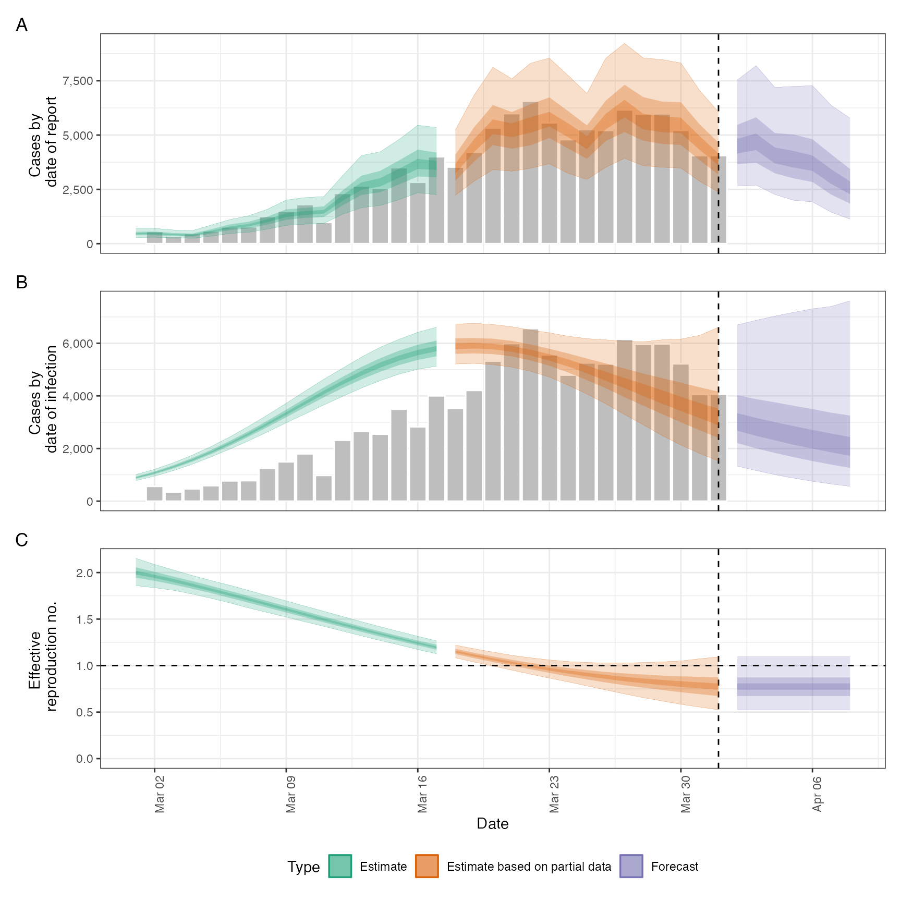

![[Maturing]](figures/lifecycle-maturing.svg) This function wraps the functionality of
This function wraps the functionality of estimate_infections() and
forecast_infections() in order to estimate Rt and cases by date of
infection, forecast into these infections into the future. It also contains
additional functionality to convert forecasts to date of report and produce
summary output useful for reporting results and interpreting them. See
here for
an example of using epinow to estimate Rt for Covid-19 in a country from
the ECDC data source.
Usage
epinow(
reported_cases,
generation_time = NULL,
delays = delay_opts(),
truncation = trunc_opts(),
rt = rt_opts(),
backcalc = backcalc_opts(),
gp = gp_opts(),
obs = obs_opts(),
stan = stan_opts(),
horizon = 7,
CrIs = c(0.2, 0.5, 0.9),
filter_leading_zeros = TRUE,
zero_threshold = Inf,
return_output = FALSE,
output = c("samples", "plots", "latest", "fit", "timing"),
plot_args = list(),
target_folder = NULL,
target_date,
logs = tempdir(),
id = "epinow",
verbose = interactive()
)Arguments
- reported_cases
A data frame of confirmed cases (confirm) by date (date). confirm must be integer and date must be in date format.
- generation_time
A call to
generation_time_opts()defining the generation time distribution used. For backwards compatibility a list of summary parameters can also be passed.- delays
A call to
delay_opts()defining delay distributions and options. See the documentation ofdelay_opts()and the examples below for details.- truncation
![[Experimental]](figures/lifecycle-experimental.svg) A list of options as
generated by
A list of options as
generated by trunc_opts()defining the truncation of observed data. Defaults totrunc_opts(). Seeestimate_truncation()for an approach to estimating truncation from data.- rt
A list of options as generated by
rt_opts()defining Rt estimation. Defaults tort_opts(). Set toNULLto switch to using back calculation rather than generating infections using Rt.- backcalc
A list of options as generated by
backcalc_opts()to define the back calculation. Defaults tobackcalc_opts().- gp
A list of options as generated by
gp_opts()to define the Gaussian process. Defaults togp_opts().Set to NULL to disable the Gaussian process.- obs
A list of options as generated by
obs_opts()defining the observation model. Defaults toobs_opts().- stan
A list of stan options as generated by
stan_opts(). Defaults tostan_opts(). Can be used to overridedata,init, andverbosesettings if desired.- horizon
Numeric, defaults to 7. Number of days into the future to forecast.
- CrIs
Numeric vector of credible intervals to calculate.
- filter_leading_zeros
Logical, defaults to TRUE. Should zeros at the start of the time series be filtered out.
- zero_threshold
- Numeric defaults
to Inf. Indicates if detected zero cases are meaningful by using a threshold
number of cases based on the 7 day average. If the average is above this
threshold then the zero is replaced with the backwards looking rolling
average. If set to infinity then no changes are made.
- return_output
Logical, defaults to FALSE. Should output be returned, this automatically updates to TRUE if no directory for saving is specified.
- output
A character vector of optional output to return. Supported options are samples ("samples"), plots ("plots"), the run time ("timing"), copying the dated folder into a latest folder (if
target_folderis not null, set using "latest"), and the stan fit ("fit"). The default is to return all options.- plot_args
A list of optional arguments passed to
plot.epinow().- target_folder
Character string specifying where to save results (will create if not present).
- target_date
Date, defaults to maximum found in the data if not specified.
- logs
Character path indicating the target folder in which to store log information. Defaults to the temporary directory if not specified. Default logging can be disabled if
logsis set to NULL. If specifying a custom logging setup then the code forsetup_default_loggingand thesetup_loggingfunction are a sensible place to start.- id
A character string used to assign logging information on error. Used by
regional_epinowto assign errors to regions. Alter the default to run with error catching.- verbose
Logical, defaults to
TRUEwhen used interactively and otherwiseFALSE. Should verbose debug progress messages be printed. Corresponds to the "DEBUG" level fromfutile.logger. Seesetup_loggingfor more detailed logging options.
Value
A list of output from estimate_infections, forecast_infections, report_cases, and report_summary.
Examples
# \donttest{
# set number of cores to use
old_opts <- options()
options(mc.cores = ifelse(interactive(), 4, 1))
# construct example distributions
generation_time <- get_generation_time(
disease = "SARS-CoV-2", source = "ganyani"
)
incubation_period <- get_incubation_period(
disease = "SARS-CoV-2", source = "lauer"
)
reporting_delay <- list(
mean = convert_to_logmean(2, 1),
mean_sd = 0.1,
sd = convert_to_logsd(2, 1),
sd_sd = 0.1,
max = 10
)
# example case data
reported_cases <- example_confirmed[1:40]
# estimate Rt and nowcast/forecast cases by date of infection
out <- epinow(
reported_cases = reported_cases, generation_time = generation_time,
rt = rt_opts(prior = list(mean = 2, sd = 0.1)),
delays = delay_opts(incubation_period, reporting_delay)
)
#> Logging threshold set at INFO for the EpiNow2 logger
#> Writing EpiNow2 logs to the console and: /tmp/RtmpvgCEHU/regional-epinow/2020-04-01.log
#> Logging threshold set at INFO for the EpiNow2.epinow logger
#> Writing EpiNow2.epinow logs to the console and: /tmp/RtmpvgCEHU/epinow/2020-04-01.log
#> WARN [2023-04-28 13:58:54] epinow: There were 1 divergent transitions after warmup. See
#> https://mc-stan.org/misc/warnings.html#divergent-transitions-after-warmup
#> to find out why this is a problem and how to eliminate them. -
#> WARN [2023-04-28 13:58:54] epinow: Examine the pairs() plot to diagnose sampling problems
#> -
# summary of the latest estimates
summary(out)
#> measure estimate
#> 1: New confirmed cases by infection date 3234 (1478 -- 6810)
#> 2: Expected change in daily cases Likely decreasing
#> 3: Effective reproduction no. 0.78 (0.51 -- 1.1)
#> 4: Rate of growth -0.063 (-0.15 -- 0.029)
#> 5: Doubling/halving time (days) -11 (24 -- -4.7)
# plot estimates
plot(out)

# summary of R estimates
summary(out, type = "parameters", params = "R")
#> date variable strat type median
#> 1: 2020-03-01 R <NA> estimate 2.0050429
#> 2: 2020-03-02 R <NA> estimate 1.9631118
#> 3: 2020-03-03 R <NA> estimate 1.9164157
#> 4: 2020-03-04 R <NA> estimate 1.8668004
#> 5: 2020-03-05 R <NA> estimate 1.8172032
#> 6: 2020-03-06 R <NA> estimate 1.7655951
#> 7: 2020-03-07 R <NA> estimate 1.7134272
#> 8: 2020-03-08 R <NA> estimate 1.6590189
#> 9: 2020-03-09 R <NA> estimate 1.6033284
#> 10: 2020-03-10 R <NA> estimate 1.5494717
#> 11: 2020-03-11 R <NA> estimate 1.4952720
#> 12: 2020-03-12 R <NA> estimate 1.4428808
#> 13: 2020-03-13 R <NA> estimate 1.3920575
#> 14: 2020-03-14 R <NA> estimate 1.3419665
#> 15: 2020-03-15 R <NA> estimate 1.2922137
#> 16: 2020-03-16 R <NA> estimate 1.2436989
#> 17: 2020-03-17 R <NA> estimate 1.1969340
#> 18: 2020-03-18 R <NA> estimate based on partial data 1.1530029
#> 19: 2020-03-19 R <NA> estimate based on partial data 1.1107812
#> 20: 2020-03-20 R <NA> estimate based on partial data 1.0703744
#> 21: 2020-03-21 R <NA> estimate based on partial data 1.0316030
#> 22: 2020-03-22 R <NA> estimate based on partial data 0.9961454
#> 23: 2020-03-23 R <NA> estimate based on partial data 0.9629018
#> 24: 2020-03-24 R <NA> estimate based on partial data 0.9329609
#> 25: 2020-03-25 R <NA> estimate based on partial data 0.9048315
#> 26: 2020-03-26 R <NA> estimate based on partial data 0.8793135
#> 27: 2020-03-27 R <NA> estimate based on partial data 0.8568736
#> 28: 2020-03-28 R <NA> estimate based on partial data 0.8381544
#> 29: 2020-03-29 R <NA> estimate based on partial data 0.8213972
#> 30: 2020-03-30 R <NA> estimate based on partial data 0.8044788
#> 31: 2020-03-31 R <NA> estimate based on partial data 0.7905809
#> 32: 2020-04-01 R <NA> estimate based on partial data 0.7766908
#> 33: 2020-04-02 R <NA> forecast 0.7766908
#> 34: 2020-04-03 R <NA> forecast 0.7766908
#> 35: 2020-04-04 R <NA> forecast 0.7766908
#> 36: 2020-04-05 R <NA> forecast 0.7766908
#> 37: 2020-04-06 R <NA> forecast 0.7766908
#> 38: 2020-04-07 R <NA> forecast 0.7766908
#> 39: 2020-04-08 R <NA> forecast 0.7766908
#> date variable strat type median
#> mean sd lower_90 lower_50 lower_20 upper_20 upper_50
#> 1: 2.0069258 0.08712585 1.8652966 1.9463822 1.9846367 2.0278260 2.0636092
#> 2: 1.9631052 0.07439264 1.8387435 1.9132259 1.9434512 1.9809909 2.0125756
#> 3: 1.9165547 0.06644452 1.8081907 1.8720226 1.8979879 1.9335731 1.9625639
#> 4: 1.8677033 0.06195311 1.7718248 1.8257122 1.8505119 1.8845871 1.9100059
#> 5: 1.8169956 0.05934654 1.7231065 1.7772621 1.8017706 1.8333388 1.8560674
#> 6: 1.7648823 0.05742717 1.6732516 1.7266182 1.7516894 1.7793783 1.8015832
#> 7: 1.7118051 0.05554296 1.6218909 1.6749912 1.6975945 1.7264710 1.7462346
#> 8: 1.6581801 0.05347938 1.5733575 1.6227777 1.6437962 1.6713159 1.6918143
#> 9: 1.6043860 0.05130229 1.5243413 1.5699682 1.5897891 1.6162242 1.6368347
#> 10: 1.5507553 0.04922588 1.4736529 1.5182648 1.5369094 1.5616303 1.5820677
#> 11: 1.4975718 0.04749750 1.4235682 1.4669750 1.4845492 1.5074188 1.5273261
#> 12: 1.4450731 0.04628868 1.3727639 1.4143932 1.4326555 1.4548840 1.4738625
#> 13: 1.3934571 0.04561188 1.3208635 1.3638501 1.3805465 1.4034200 1.4218393
#> 14: 1.3428933 0.04530308 1.2701005 1.3128563 1.3307313 1.3520517 1.3712648
#> 15: 1.2935360 0.04508909 1.2212761 1.2639527 1.2817083 1.3022771 1.3204314
#> 16: 1.2455372 0.04471259 1.1761732 1.2158511 1.2334587 1.2540229 1.2723596
#> 17: 1.1990582 0.04406635 1.1305943 1.1701098 1.1864632 1.2075416 1.2256214
#> 18: 1.1542760 0.04330040 1.0858553 1.1264622 1.1426529 1.1628658 1.1812385
#> 19: 1.1113840 0.04287441 1.0423077 1.0839421 1.0998286 1.1203389 1.1379217
#> 20: 1.0705863 0.04350952 1.0006285 1.0417892 1.0597313 1.0802257 1.0977428
#> 21: 1.0320873 0.04598234 0.9604532 1.0014451 1.0216722 1.0426611 1.0607133
#> 22: 0.9960782 0.05081478 0.9154328 0.9624184 0.9845878 1.0077553 1.0266971
#> 23: 0.9627255 0.05809941 0.8687493 0.9231107 0.9489036 0.9766547 0.9985848
#> 24: 0.9321603 0.06759981 0.8239671 0.8849348 0.9147851 0.9489996 0.9749269
#> 25: 0.9044722 0.07896300 0.7774379 0.8498158 0.8832622 0.9245137 0.9547187
#> 26: 0.8797060 0.09186016 0.7320583 0.8163217 0.8550702 0.9012887 0.9374364
#> 27: 0.8578603 0.10603347 0.6901194 0.7860360 0.8305882 0.8817922 0.9241116
#> 28: 0.8388886 0.12129343 0.6506253 0.7566606 0.8082146 0.8639521 0.9118325
#> 29: 0.8227017 0.13749764 0.6104869 0.7295959 0.7865807 0.8493737 0.9035501
#> 30: 0.8091701 0.15452036 0.5742327 0.7069061 0.7667342 0.8383890 0.8992889
#> 31: 0.7981277 0.17221348 0.5396530 0.6841386 0.7504334 0.8274907 0.8935858
#> 32: 0.7893739 0.19036007 0.5105670 0.6669038 0.7363159 0.8182277 0.8905865
#> 33: 0.7893739 0.19036007 0.5105670 0.6669038 0.7363159 0.8182277 0.8905865
#> 34: 0.7893739 0.19036007 0.5105670 0.6669038 0.7363159 0.8182277 0.8905865
#> 35: 0.7893739 0.19036007 0.5105670 0.6669038 0.7363159 0.8182277 0.8905865
#> 36: 0.7893739 0.19036007 0.5105670 0.6669038 0.7363159 0.8182277 0.8905865
#> 37: 0.7893739 0.19036007 0.5105670 0.6669038 0.7363159 0.8182277 0.8905865
#> 38: 0.7893739 0.19036007 0.5105670 0.6669038 0.7363159 0.8182277 0.8905865
#> 39: 0.7893739 0.19036007 0.5105670 0.6669038 0.7363159 0.8182277 0.8905865
#> mean sd lower_90 lower_50 lower_20 upper_20 upper_50
#> upper_90
#> 1: 2.149653
#> 2: 2.083698
#> 3: 2.023458
#> 4: 1.965866
#> 5: 1.913555
#> 6: 1.858232
#> 7: 1.803079
#> 8: 1.747770
#> 9: 1.690720
#> 10: 1.634793
#> 11: 1.578744
#> 12: 1.522641
#> 13: 1.469827
#> 14: 1.419469
#> 15: 1.368119
#> 16: 1.322165
#> 17: 1.274661
#> 18: 1.229221
#> 19: 1.183714
#> 20: 1.143940
#> 21: 1.109082
#> 22: 1.082141
#> 23: 1.059262
#> 24: 1.048121
#> 25: 1.040253
#> 26: 1.032087
#> 27: 1.031438
#> 28: 1.039474
#> 29: 1.054940
#> 30: 1.068250
#> 31: 1.090867
#> 32: 1.107478
#> 33: 1.107478
#> 34: 1.107478
#> 35: 1.107478
#> 36: 1.107478
#> 37: 1.107478
#> 38: 1.107478
#> 39: 1.107478
#> upper_90
options(old_opts)
# }